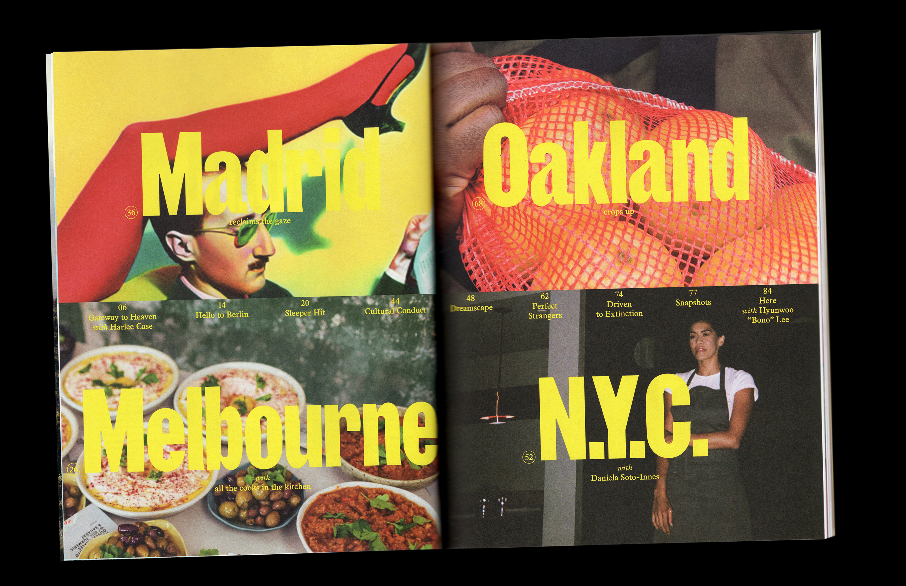
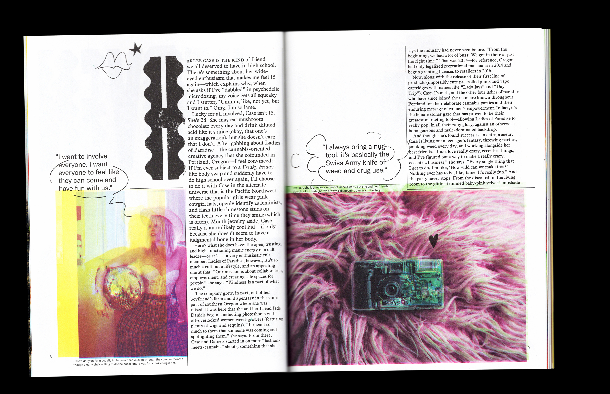
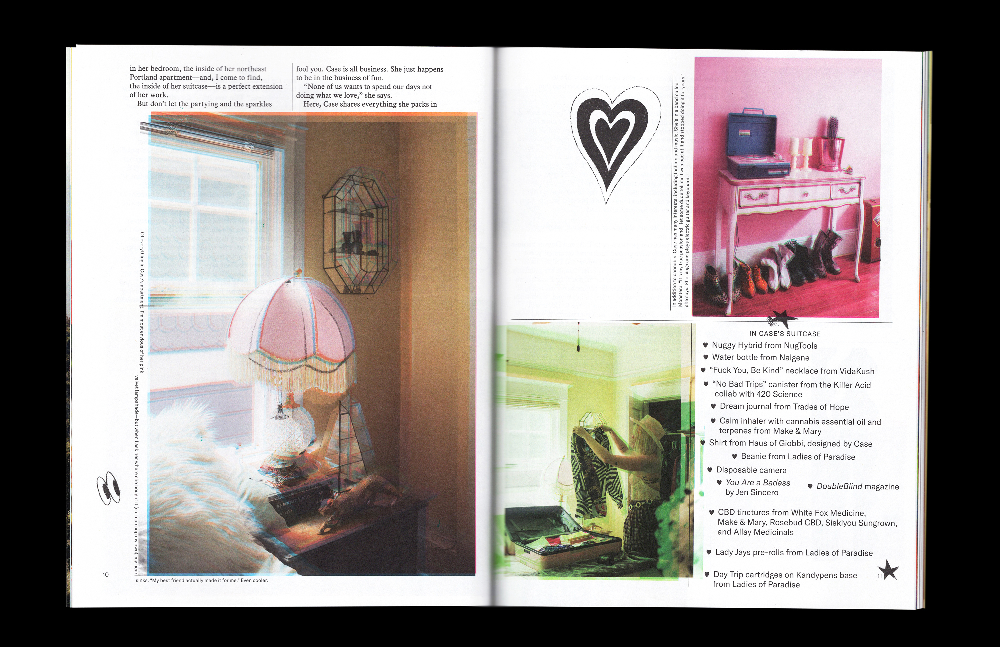
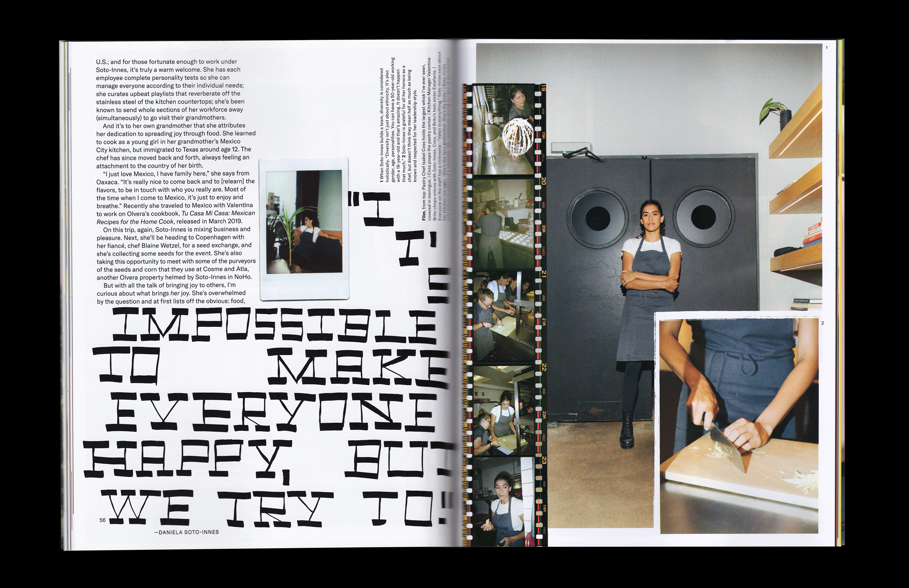

Issue 10
Here Magazine (Away)
Issue (84pp, cover with foil and blind emboss)
2019
NYC chef Daniela Soto-Innes is the World’s Best Female Chef and the world’s nicest boss; weed queen Harlee Case throws cannabis parties in her hometown of Portland, Oregon; in Madrid, women artists get the recognition they deserve; author Porochista Khakpour dreams of Mexico City; chefs guard the local flavor of Oakland against gentrification; in Melbourne, we meet the restaurateurs giving migrants a warm welcome; photographer Laurence Philomène captures our readers’ best tips for beating jet lag; and we explore old and new Berlin with one of its most famous literary figures.
Designed with Natalie Shields.
 Contents and editor's letter:
Contents and editor's letter:


Packing with Ladies of Paradise's Harlee Case:

Reader-sourced jetlag cures:
On falling in love with Mexico City:
A profile of Daniela Soto-Innes, chef at Cosme and Atla:

A portfolio of images that respond to the prompt 'stranger':
On the ground with a local: